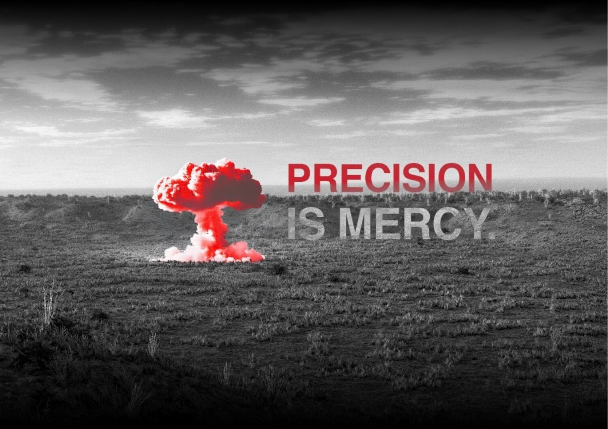

Precision is Mercy
How destructive force should be designed and employed by a state that claims restraint as a virtue. The answer is contained in one of the company's simplest governing phrases: Precision is Mercy.
A defence company should be comfortable with the fact that its products are weapons
A defence company should be comfortable with the fact that its products are weapons. They are built to destroy military capability. A system that cannot do this reliably is a weak instrument of deterrence. Lethality, therefore, matters in the most literal sense. A credible weapon must be capable of producing decisive effect against the military target for which it was designed.
There is sometimes a temptation to soften this language when speaking of modern defence technology. We do not. Apollyon intends to build highly lethal weapons, making it prohibitively costly to wage war against India.
Restraint has value only when a state possesses alternatives. A country that cannot impose costs upon the aggressor can maintain peace only as an act of mercy of the aggressor. Only a country with overwhelming military power can choose not to escalate. It can reply to provocation with strategic, lethal and precise measure, upholding deterrence and preventing an extended war.
Precision in striking a legitimate military target is an act of mercy toward the civilian population
The ethical question begins after accepting that reality: how should destructive force be designed and employed by a state that claims restraint as a virtue? Our answer is contained in one of the company's simplest phrases:
Precision is Mercy.
Precision in striking a legitimate military target is an act of mercy toward the civilian population. This distinction matters because destructive capacity by itself is a poor measure of military quality. The higher standard is discriminate force: the ability to produce the required military effect against the intended target while minimising incidental harm, unnecessary destruction and risk to those who are not direct part of the conflict.
Lethality and precision therefore belong together. Lethality provides certainty of military effect; precision confines that effect to where it is intended. The desired weapon is one that maximises the probability of achieving the legitimate military objective while minimising consequences beyond it.

Distinction, proportionality, precaution
This is close to the basic logic of international humanitarian law. The law of armed conflict requires distinction between military objectives and civilian objects, and constrains incidental civilian harm through proportionality and precautions.
Target discrimination cannot be treated as an operational afterthought bolted onto coordinate-guided munitions. Discrimination requires dedicated terminal sensing. Apollyon strike systems integrate passive imaging seekers that track targets visually rather than navigating blindly to static launch coordinates. A munition that strikes empty ground or collateral structures because a target repositioned fails the test of discriminate force.
Certainty strengthens deterrence
This certainty is what strengthens deterrence. An adversary is less likely to gamble against a capability whose effectiveness has been demonstrated and whose consequences can be predicted with confidence. If deterrence nevertheless fails, military force should achieve its objective decisively rather than compensate for technological uncertainty through prolonged or indiscriminate destruction.
The effectiveness of a weapon is therefore independent of the sheer amount of energy it releases. An effective weapon is one whose effect is sufficiently understood, whose delivery is sufficiently reliable and whose military consequence is sufficiently credible that the adversary must account for it before deciding to act.
Every product specification lists circular error probable alongside warhead mass. Our design architecture consistently prioritizes smaller, precision-guided warheads over massive unguided ordnance. Predictability of terminal effect serves as a core deterrent parameter.
The machine goes first, always
In a democratic and plural state, the purpose of military power is neither conquest nor violence as an expression of national will. Its purpose is to make coercion unprofitable, to protect political independence, and to give the state enough freedom of action that diplomacy, restraint and peaceful settlement remain genuine choices rather than necessities imposed by weakness.
Initial contact with hostile defences carries the highest tactical risk. Unmanned systems must absorb this danger before soldiers enter contested space. The machine goes first, always. Strike systems are built as attritable units rather than exquisite platforms requiring costly protection. Ahuti maintains strict cost boundaries to ensure interceptor salvos remain economically viable. Similarly, Nightshade engages hostile air defences so human pilots avoid contested terminal zones.
Doctrinal commitments and design constraints
| Commitment | Binding engineering consequence |
|---|---|
| Discriminate force | Passive imaging terminal seekers that track physical targets; circular error probable specified alongside warhead mass on every strike system. |
| Predictable effect | Modular warhead configurations (penetrator, blast-fragmentation, thermobaric) and electronic deceleration-sensing fuzes that ensure detonation at designated depths. |
| Human command retention | Cortex excludes autonomous engagement and weapon release. The software correlates tracks and nominates targets; human commanders retain sole launch authority. |
| Machine first | Attritable airframes engineered for rapid replacement; interceptor costs constrained so firing salvos remains economically sustainable. |
| Proportionality in practice | Kinetic impact and proximity-burst options on interceptors, enabling neutralization in urban airspace where explosive fragmentation is prohibited. |
The three pillars of Apollyon doctrine
The company's ethos, industrial model, and architecture are grounded in three interconnected doctrinal texts:
Precision is Mercy
Lethality and precision belong together. Force without precision is barbarism; restraint without lethality is impotence. True deterrence requires discriminate, highly lethal weapons that eliminate legitimate military targets while protecting non-combatants, making aggression prohibitively costly.
The New Arsenal
An arsenal is not a warehouse of stored weapons; it is the industrial capacity to build, replenish, and modify them continuously during war. Sovereign strategic autonomy rests on deep domestic tooling, software control, and the accumulation of institutional engineering mastery.
The Missing Middle
India is not missing technology; it is missing an industrial tempo. Between exquisite strategic weapons and mature ordnance commodities sits the unbuilt layer: high-tech, software-defined, attritable mass iterated in weeks and produced at rate to win modern attrition arithmetic.